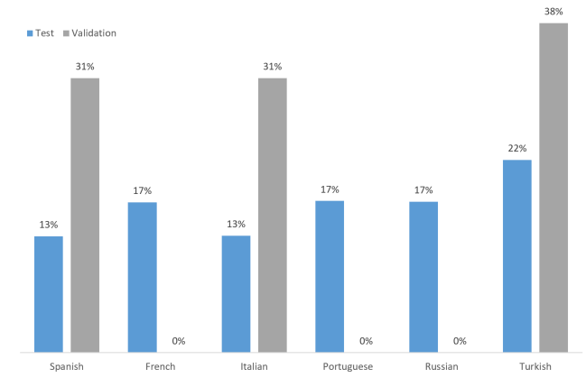

该比赛目的是训练一个分类器，使用该分类器自动判断维基百科的评论是否为toxic。
toxicity is defined as anything rude, disrespectful or otherwise likely to make someone leave a discussion.
值得注意的是，训练和验证的语料只有三种语言，而预测的语料却是六种语言。
数据集
评估指标
数据集分布
| 数据量 | 正例率 | 正样本数量 | 负样本数量 | 语种 |
train1 | 223549 | 9.57% | 21384 | 202165 | 98.7%英语 |
train2 | 1902194 | 8% | 152111 | 1334581（[0, 0.1)）/ 1750083（[0, 0.5)） |
|
valid | 8000 | 15.38% | 1230 | 6770 | 3种语言 |
test | 63812 |
|
|
| 6种语言 |
按照（[0, 0.1)+[0.5, 1]），train1+train2 正例率36.47%，数据量475660。
train1/valid/test没有重复项，而且valid与test的样本没有交集，即样本没有泄露。但train2的comment_text列有重复项，且重复项对应的标签有时候不一致。
train1/train2/valid/test都没有缺失值。
xhulu的train2正样本选了112163个左右。
train1的六种语言翻译版本，样本数量：
es 西班牙语 223378
tr 土耳其语 223394
it 意大利语 223394
ru 俄语 223147
pt 葡萄牙语 223394
fr 法语 223394
train1（English comments from Wikipedia’s talk page edits）
several additional toxicity subtype attributes：
severe_toxic
obscene
threat
insult
indentity_hate
In this competition, you’re challenged to build a multi-headed model that’s capable of detecting different types of of toxicity like threats, obscenity, insults, and identity-based hate better than Perspective’s
current models.
train1来源于第一次比赛，第一次比赛的train包含159571条样本，test包含153164条样本，所以train1应该是融合了第一次train+test，然后取的子集。
train2（an expanded version of the Civil Comments dataset with a range of additional labels）
several additional toxicity subtype attributes：
severe_toxicity
obscene
threat
insult
identity_attack
sexual_explicit
a subset of comments have been labelled with a variety of identity attributes, representing the identities that are mentioned in the comment：
male
female
transgender
other_gender
heterosexual
homosexual_gay_or_lesbian
bisexual
other_sexual_orientation
christian
jewish
muslim
hindu
buddhist
atheist
other_religion
black
white
asian
latino
other_race_or_ethnicity
physical_disability
intellectual_or_learning_disability
psychiatric_or_mental_illness
other_disability
metadata from Jigsaw's annotation：
toxicity_annotator_count
identity_annotator_count
metadata from Civil Comments：
created_date
publication_id
parent_id
article_id
rating
funny
wow
sad
likes
disagree
When the Conversation AI team first built toxicity models, they found that the models
incorrectly learned to associate the names of frequently attacked identities with toxicity. Models predicted a high likelihood of toxicity for comments containing those identities (e.g. "gay"), even when those comments were not actually toxic (such as "I am a gay woman"). This happens because training data was pulled from available sources where unfortunately, certain identities are overwhelmingly referred to in offensive ways. Training a model from data with these imbalances risks simply mirroring those biases back to users.
In this competition, you're challenged to build a model that recognizes toxicity and minimizes this type of unintended bias with respect to mentions of identities.
train2来源于第二次比赛。
valid（comments from Wikipedia talk pages in different non-English languages）
语种
test（comments from Wikipedia talk pages in different non-English languages）
语种
tr 14000
pt 11012
ru 10948
fr 10920
it 8494
es 8438
